Each figure summarizes the same clause-to-segment assignments as other analyses in this
project, but aggregated so each row is one recall instead of one clause. The script reads
data/processed/<story>/clauses_to_segments_set.csv (column recall_id,
segment_ids as Python sets of 1-based segment indices) and
data/processed/<story>/segments.csv for max_segment_id.
For each distinct recall_id, the pipeline builds one binary row of length N (number of
segments). Column s is 1 if any clause from that recall lists segment s in
segment_ids, and 0 otherwise (create_segment_matrix in
experiments/chunks_monochrome.py). The result is a dense recall×segment incidence matrix.
It runs an economy-size
numpy.linalg.svd
on that matrix (SVDProcessor in tools/svd_processor.py). The saved PNG is the
Matplotlib figure from present_svd: a 2×2 layout with the "cool"
colormap on the heatmap. Rows of the heatmap are reordered by ascending scores from the second column of
U (0-based index 1) so recalls with similar loadings appear together. The other panels plot that
same column of U (after sorting), the corresponding row of VT from
numpy.linalg.svd (a right singular vector) over segment index, and the singular values
S (scree-style). Subplot titles follow the code’s
wording (“First” singular vector / projection refer to that second singular direction).
How to read it: the heatmap shows which segments appear in which recalls; block-like structure after row reordering suggests groups of recalls sharing segment patterns. The segment-axis curve shows which segments rise or fall on the highlighted singular mode; the singular-value panel shows how sharply the spectrum decays (how much structure is captured by the first few modes).
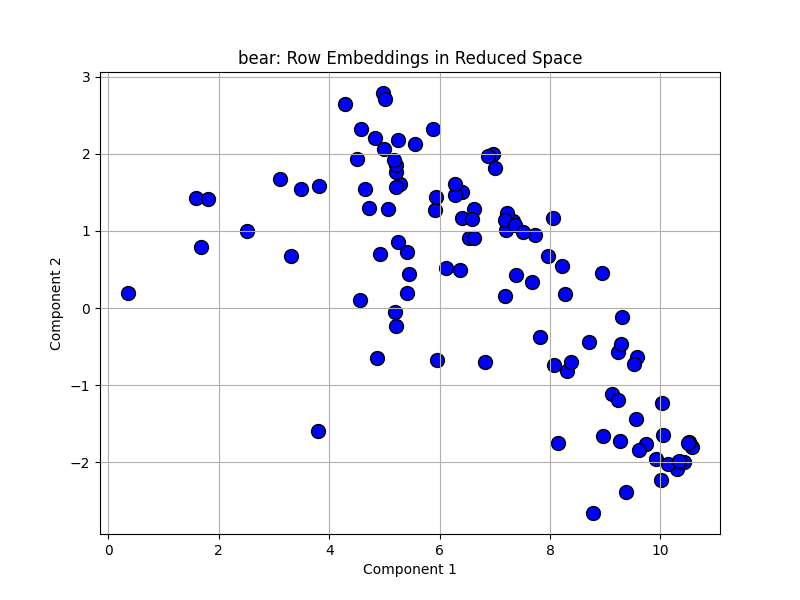
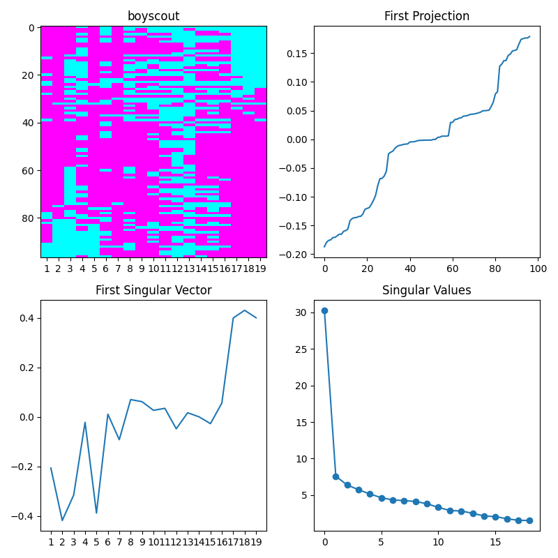
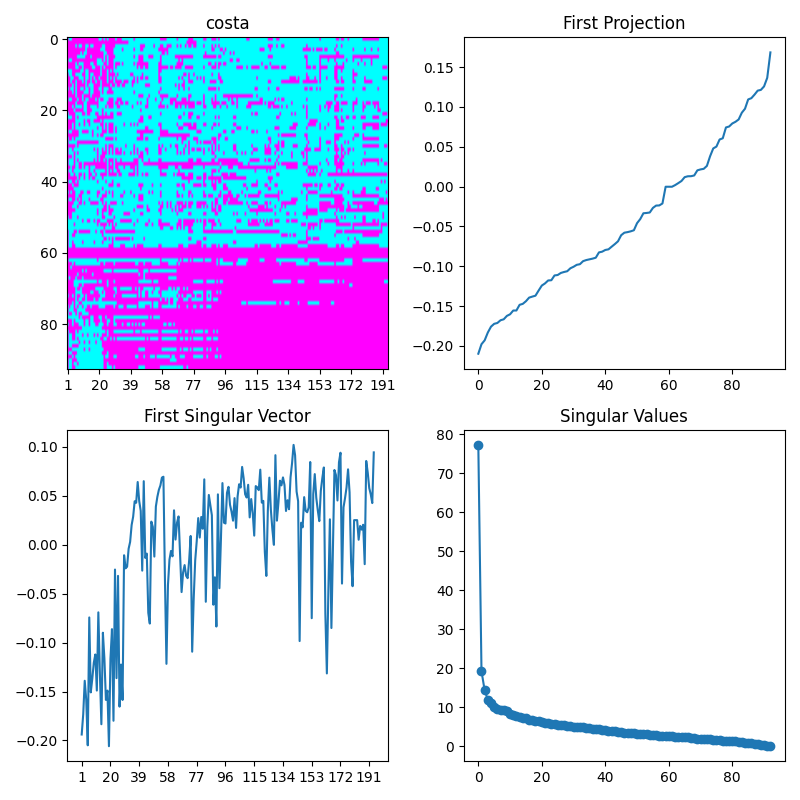
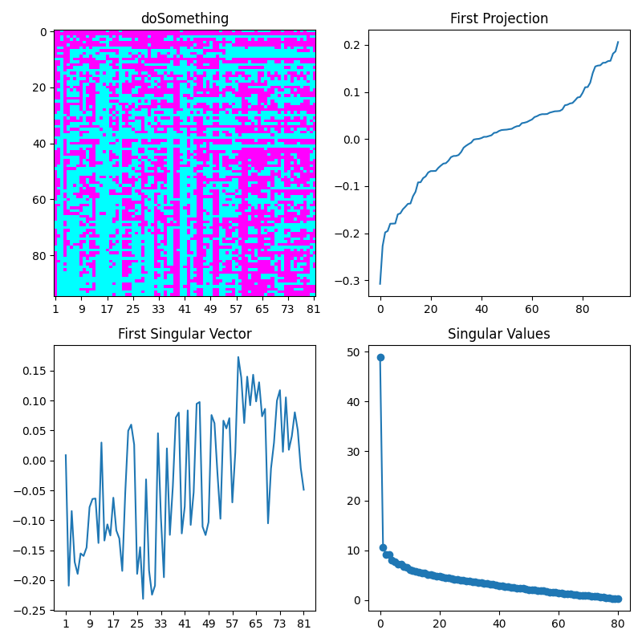
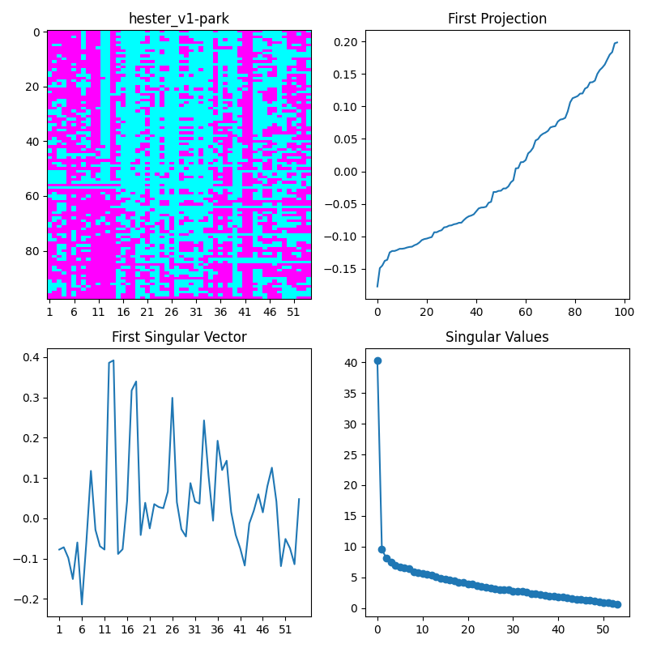
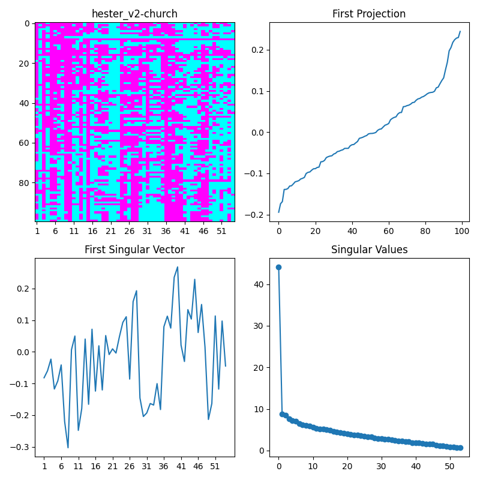
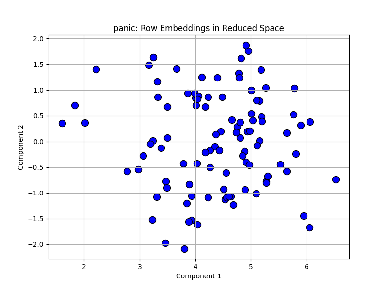
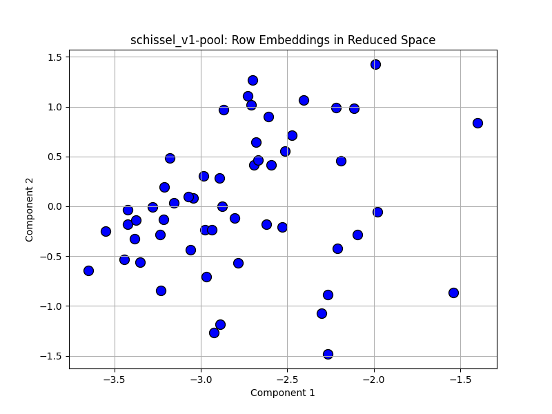
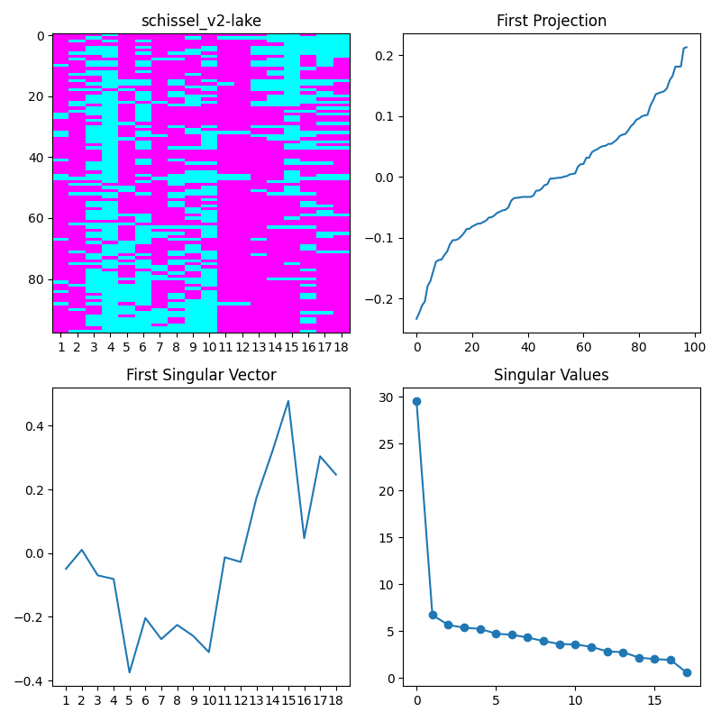
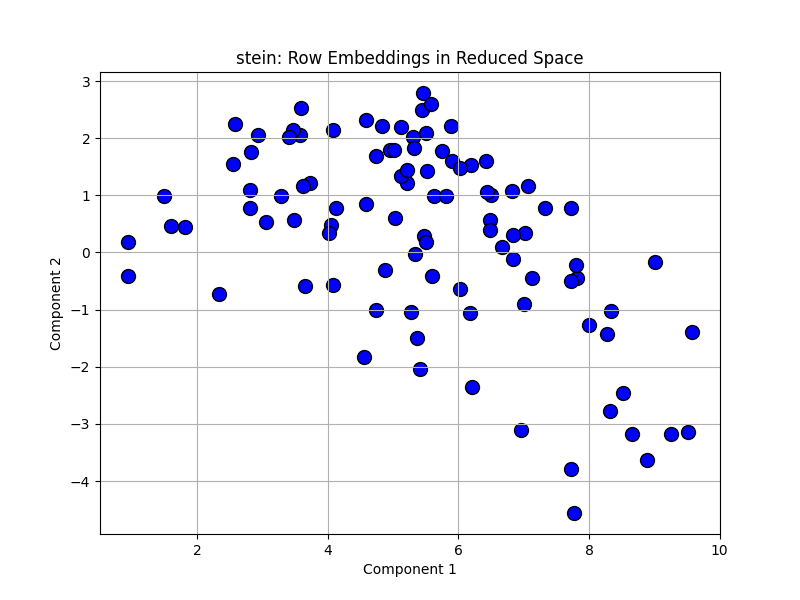
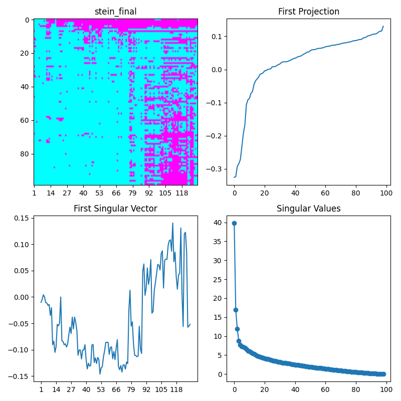
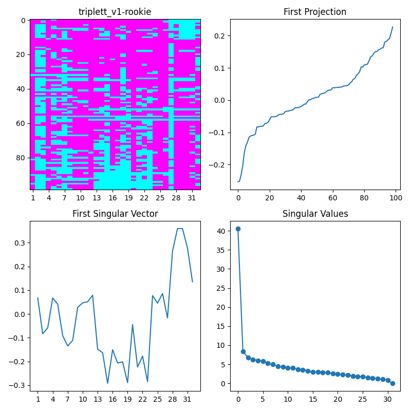
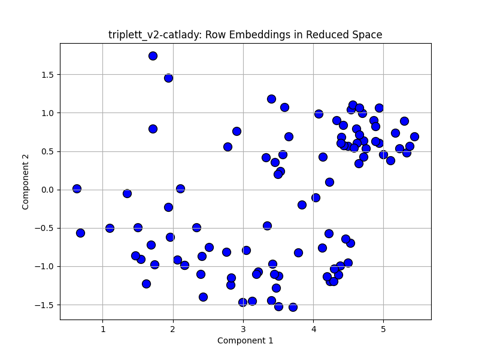